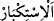

“Fakat âhirette” dirilme, amellerin karşılığını görme ve benzeri âhiret hallerine
“inanmayanlar var ya...”
Îman, lügatte kalb ile tasdik etmektir. Şeriatta ise kalb ile inanmak, dil ile ikrar
etmektir. Süheylî, Kitabü’l-emâlî’de der ki: “Tasdik ile îmân arasındaki fark şudur:
Tasdik, mutlaka bir haber karşısında olur. Îman ise doğru bir haber karşısında olduğu
gibi bir fikir ve düşünce için de kullanılabilir. San’ata bakıp onu yapanı tanıdığında
îmân edersin, bir haberi tasdik etmiş olmazsın. Çünkü ortada bir haber yoktur. Îman ve
ikrar ettiğin şey hakkında bir haber gelirse o haberi tasdik etmiş olursun. Tasdîk,
sustuğun halde kalb ile de olur. Dersin ki: “Şu hadîsi işittim ve tasdik ettim.” Şu halde
îmanda, lügat ve şeriat yönünden mutlaka lafzın îtikad ile bir araya gelmesi gerekir.”
“Onların kalpleri inkârcı,” kalpleri, marifetle değil de inkârla muttasıf olup Allah’ın
vahdâniyyetini inkâr ederler. “Kendileri de böbürlenen kimselerdir.”
Onlar öyle bir topluluktur ki, Allah’ın vahdâniyyetini îtirâfa yanaşmamaları, hakkı
kabûlden tekebbürleri onların normal âdeti hâline geldiği gibi, inkâr da onların
karakteri olmuştur.
23. Hiç şüphesiz Allah, onların gizlediklerini de açığa vurduklarını da bilir. O,
büyüklük taslayanları asla sevmez.
“Hiç şüphesiz” elbette, gerçekten “Allah, onların gizlediklerini de” kalplerinde
gizledikleri inkârı da “açığa vurduklarını da” büyüklük taslamalarını da “bilir.”
“, gerçekten, anlamında kullanılan tahkîk ve te’kid edâtıdır. Ebü’l-Bakâ der ki:
ile ilgili dört görüş vardır: Birincisi, daha önce geçen sözü reddetmek içindir.
Yâni durum iddiâ ettikleri gibi değildir anlamınadır. İkincisi, iki kelimeden mürekkep
olup “gerçekten” demektir. Üçüncüsü, şüphesiz, kesinlikle demektir. Dördüncüsü,
hiçbir mânî yoktur, takdîrindedir.
“O,” Allah Teâlâ, tevhîd karşısında “büyüklük taslayanları” mü’min olsun müşrik
olsun kendilerini büyük görenlerin hepsini “asla sevmez.”
“ (büyüklük taslamak)”, kendisini olduğundan üstün görmek ve hakkı inkâr
etmektir. Mütekebbir ile müstekbir arasındaki fark, tekebbür Hak Teâlâ’nın
vasıflarından olduğu gibi hak olan kibri de içine alan genel bir kelimedir. Hak Teâlâ’nın
esmaü’l-hüsnâsının arasında “el-Cebbâr’ ve el-Mütekebbir” isimleri sayılmaktadır.
Hz. Peygamber (a.s.) da “Mütekebbire karşı tekebbür sadakadır.” buyurmuştur.
Tekebbür, yasaklanan bâtıl kibri de içine alır. Nitekim Allah Teâlâ: “Yeryüzünde